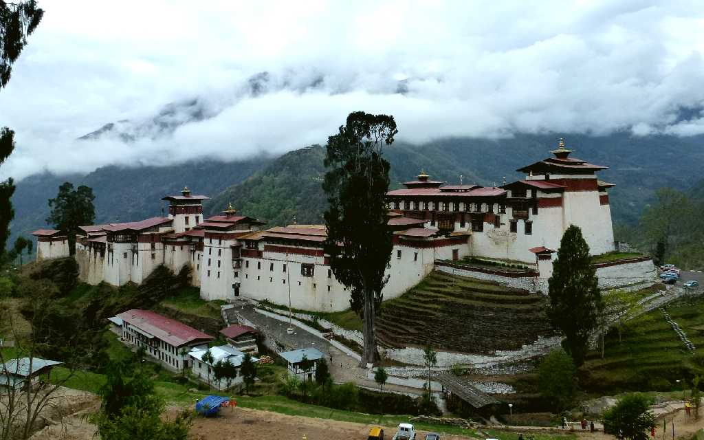
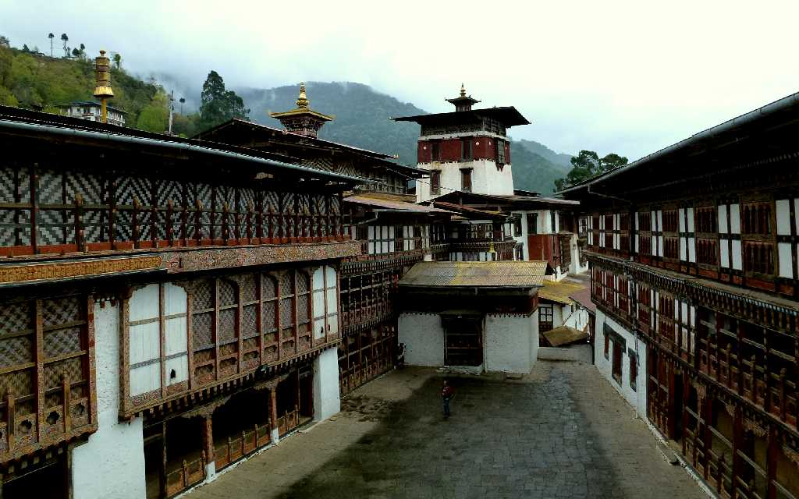
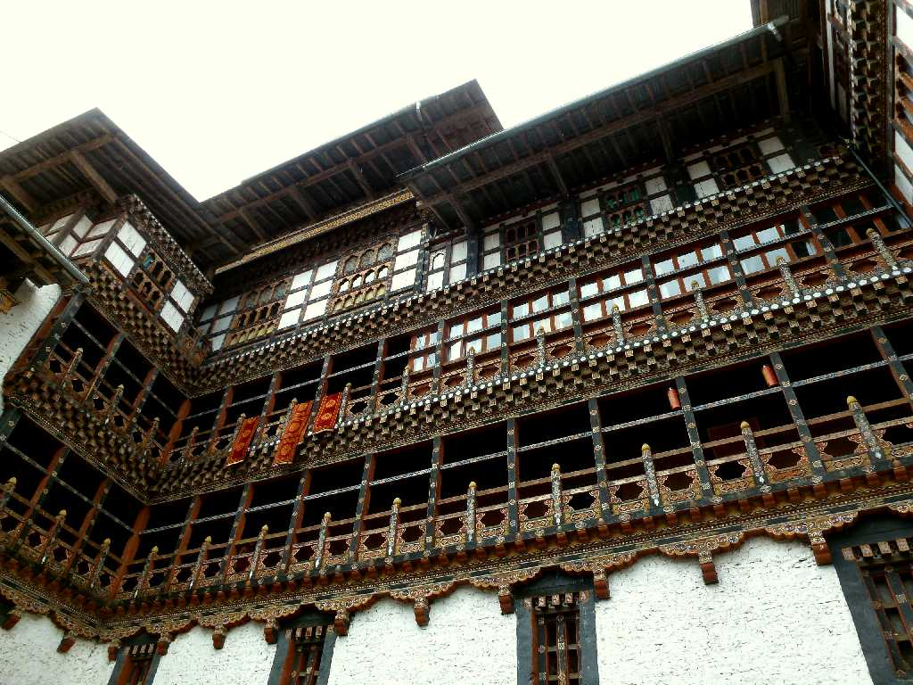
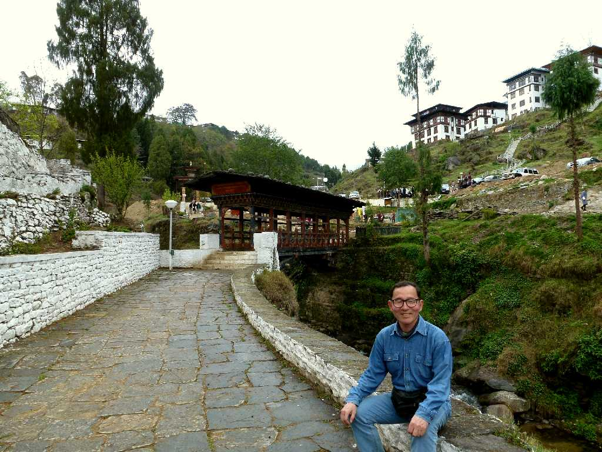
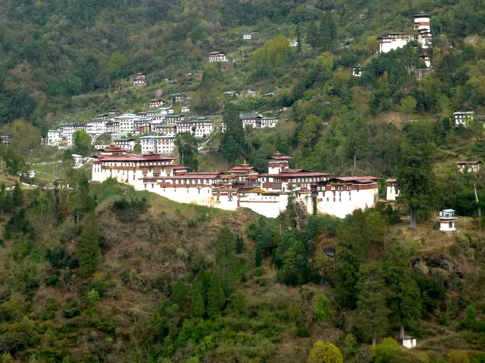
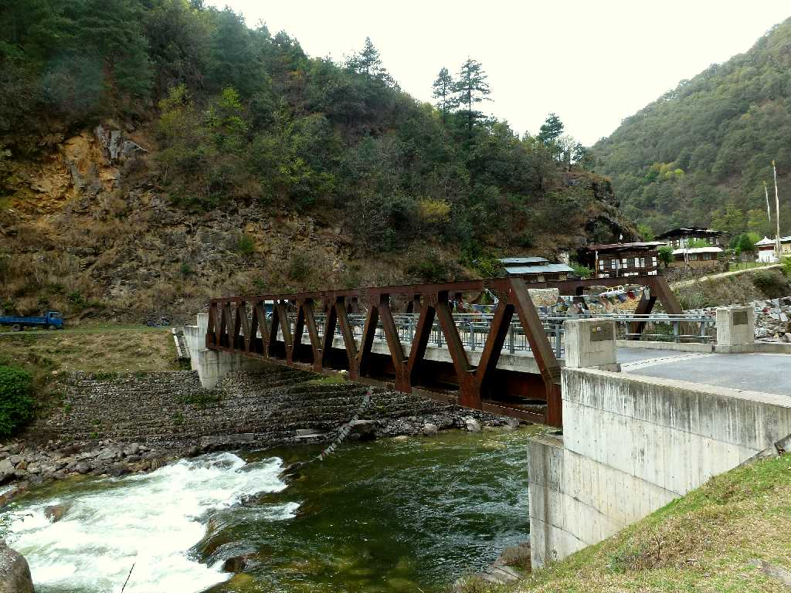

Trongsa Dzong Tongsa
１６４８年ガワンナムゲルによって東方からの攻撃に備えるため築かれたブータンで最大かつ最も美しいゾン

Trongsa Dzong
現在でもワンチェク王朝の精神的政治的よりどころであり皇太子はまずトンサに任命される
Phurupa Mural Trongsa Dzong
パドマサンバヴァに由来する魔を調伏する「クイ」の働きを仏格化した典型的な忿怒尊プルパの壁画

Monastery Trongsa Dzong

April 9 2012 Entrance Bridge Trongsa Dzong

Distant View Trongsa Dzong
マンデ川の渓谷の対岸から観た美しいトンサゾンと右上の見張台

Mangde Chu Trongsa
日本の協力によりマンデ川に架けられた橋でプータン国旗と日章旗が橋の袂にあった